Figure 2) Correlation panel detail.
Correlation
1) Raw photon files are loaded with the 'Choose Files' button in the Correlation panel (A), or by dragging them onto the page. The supported formats are PicoQuant .pt3, .ptu and .pt2, Becker & Hickl .spc, .asc, and the FoCuS time-tag .csv format. Several files can be chosen at once.
2) The files are read and correlated in the background, one at a time, using the photon arrival-time correlator of Wahl, Gregor, Patting and Enderlein [4], as in FoCuS-point. The name of the file being processed is shown below the button, with a progress bar while it is read and correlated, and the number of photon records and curves added when it is finished. Large files (millions of photons) take a few seconds.
3) Each file gives an autocorrelation curve for every channel that recorded photons, and a cross-correlation curve for every pair of channels, in both directions. They are added to the Data Viewer (D) under 'point FCS', named after the file, e.g. myfile_CH1_CH1_Auto_Corr and myfile_CH1_CH2_Cross_Corr, and can be fitted like any other curve. Autocorrelation curves carry the count rate, so that the counts per molecule (cpm) are calculated when they are fitted, and cross-correlation curves carry the coincidence value (CV, Equation 3).
4) 'Correlation settings' opens the settings of the correlator. They are the same as in FoCuS-point, and are read when the files are chosen:
- Ncasc start, Ncasc end and Nsub set the lag times. The correlator calculates Nsub lag times per cascade, and the spacing of the lag times doubles from one cascade to the next, giving quasi-logarithmic lag times. Ncasc end is the number of cascades (with the defaults, 25 cascades of 6 lags), and so sets the longest lag time. Cascades below Ncasc start are not calculated: their lags are left out of the correlation (shown as G(τ) = −1), which can save time for very long recordings.
- Decay bin (ch) is the bin width, in TCSPC channels, of the photon decay (micro-time) histogram calculated for each channel.
- Gate from (ch) / to (ch) apply lifetime gating (time-gated FCS): only photons whose micro-time, in TCSPC channels, is inside this window are correlated. Leave them empty to use all photons. Gated curves are grouped separately in the Data Viewer, labelled with the gate.
- FoCuS-point legacy binning: see below.
FoCuS-point legacy binning. To reach long lag times, the correlator merges photons into coarser time bins at every cascade, and each bin should carry the total weight (number of photons) of the photons in it. The original MATLAB code did this with MATLAB's unique function, which up to MATLAB R2013a returned the last occurrence of each value. FoCuS-point uses the Python equivalent, numpy.unique, which returns the first occurrence (as MATLAB has done since R2013a). As a result, FoCuS-point moves some weight between neighbouring bins and loses part of the last bin, which slightly distorts the correlation at longer lag times, where many photons share a bin. FoCuS-Fit-JS sums the photons in each bin directly, as the original algorithm intended; this has been checked against a direct (brute-force) calculation of the binned correlation. The difference is usually small (for example up to about 0.01-0.02 in G(τ) at long lag times on a typical measurement), but can be larger for sparse or synthetic data.
Tick FoCuS-point legacy binning to reproduce FoCuS-point's results exactly instead, e.g. to compare with results obtained earlier with FoCuS-point. Leave it unticked for new analyses.
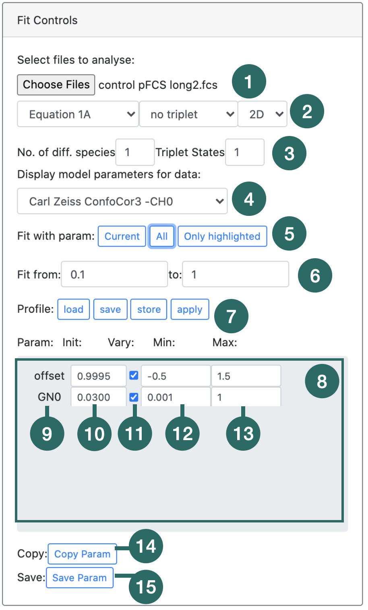
Figure 3) Fit controls detail.
File import and fitting parameters.
1) Previously correlated data files (.sin, .fcs and FoCuS .csv files) can be loaded into FoCuS-Fit-JS using the 'Choose Files' button, or by dragging them onto the page. Loaded files will appear in the Data Viewer on the right-hand side (D).
2) The first drop-down box (with Equation 1A as default) sets which diffusion equation to apply, and how the axial diffusion component is handled when fitting a 3D diffusion equation. The second drop-down box sets which of the two triplet state equations to use: 'no triplet', 'Triplet Eq 2A' or 'Triplet Eq 2B'. The third drop-down box sets whether 2D or 3D diffusion is used. N.B. More details about the equations are given in the Diffusion coefficient calculation section of this manual.
3) Once the equations have been chosen, the number of diffusing species (Diff. species) and triplet states can be set, from one to three in both cases.
4) Every correlated curve has fit parameters associated with it. To view the parameters of any of the curves, select it from the drop-down list 'Display model parameters for data'. Its parameters will appear in the table below (8).
5) The button marked 'Current' fits the curve selected in (4), starting from the parameters shown in (8). The button marked 'All' fits all of the curves listed in (4), that is all loaded curves that pass the Data filter of the Data Viewer (D), with the parameters currently shown in (8). The button marked 'Only highlighted' fits the curves that are highlighted (selected) in the Data Viewer (D) with the displayed parameters. 'All' and 'Only highlighted' copy the displayed parameters (initial values, vary, min and max) to each curve they fit, replacing its own.
6) The 'Fit from' and 'to' fields set the range of lag times (ms) which will be fitted. The range is linked to the green vertical lines shown on the plot and to the Slider Range below the plot (C), and can be changed with any of them.
7) For complicated experiments, where many fit parameters are changed from the defaults, it can be useful to save the fit profile, to make it straightforward to repeat the analysis. A profile is the model (equation, triplet, 2D/3D, number of species and triplet states) together with the parameter table (initial values, vary, min and max). 'Save' keeps the current profile in the browser (or the desktop application) on this computer, and 'Load' applies it again, also in a later session. 'Export' saves the profile to a .json file, to keep or to share with others, and 'Import' applies a profile from such a file (a profile file can also be dragged onto the page). A profile is applied to the curve shown in (4); use 'All' or 'Only highlighted' to fit other curves with it. Profiles saved by earlier versions of FoCuS-fit-JS can still be imported.
8) This table contains the parameters that are fitted, and the controls for the fitting. The parameters shown depend on the options selected in (2-3). (9) The left-hand column gives the name of the parameter. (10) Each parameter starts the fit at the value in the 'Init' column; after a fit, this column shows the fitted value. The parameters that have the 'Vary' check box (11) ticked are estimated by the fit algorithm, within the range given by 'Min' (12) and 'Max' (13); the others are held at their 'Init' value. Some values, such as N (FCS) and cpm, are calculated from the fit and have no controls. The meaning of the parameters is given in the Diffusion coefficient calculation section.
The fitted parameters, or the plotted data with their fitted models, can be copied to the clipboard with the 'Copy' buttons (14), to paste into a spreadsheet, or exported to a .csv file with the 'Export' buttons (15). 'Param' gives one row per fitted curve with its name, the model, the fit range and the fitted parameters; 'Plot Data' gives the lag times (ms) with the data and fitted model of each curve. If curves are highlighted in the Data Viewer (D), only those are copied or exported, otherwise all of them are.
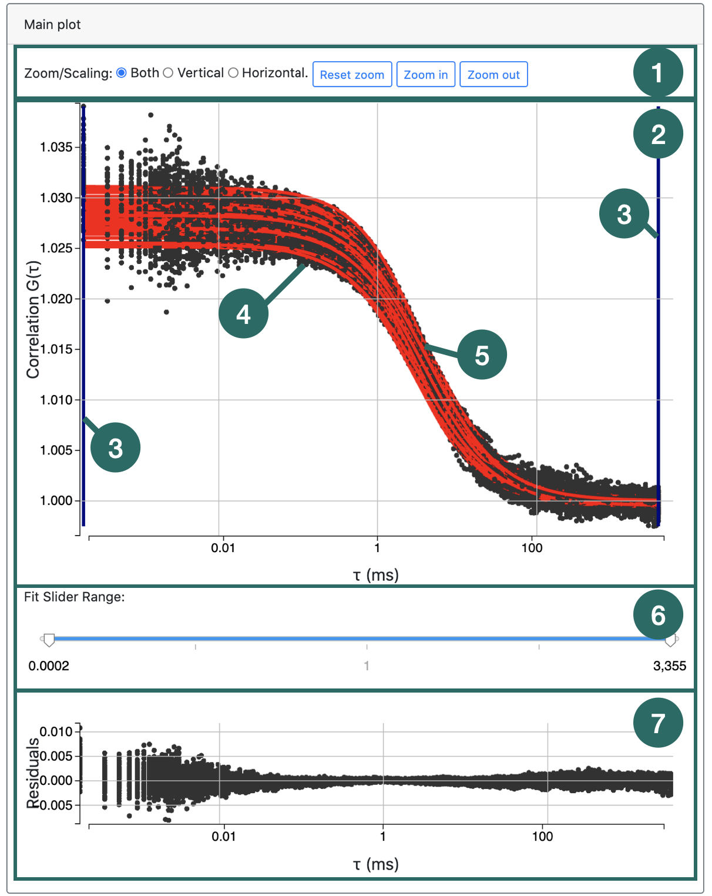
Figure 4) Main plot detail.
Main Plot Window
1) This is the main plot window. The curves that are checked in the Data Viewer (D) appear here, along with their fitted model if they have been fitted. The dark-grey circles are the data points of each curve, and the red lines are the fitted models. Curves that are highlighted in the Data Viewer are drawn in blue, with their fitted model in orange, on top of the others. Click a data point to highlight its curve in the Data Viewer (Ctrl-click, or Command-click on MacOS, to add or remove curves). The plot grows or shrinks to fit the window.2) To zoom, roll the mouse wheel over the plot. To zoom along one axis only, roll the wheel over that axis. To move the plot, click and drag it.
3) The two green vertical lines are the limits of the range that is fitted. Drag them on the plot to change the range, or use the Slider Range (6) or the 'Fit from' and 'to' fields of the Fit Controls (B).
4) The toolbar below the plot: 'Reset view' shows all the data, and 'Fit to limits' zooms to the data between the fit limits. The magnifier buttons zoom in and out along the lag time axis (X) or the G(τ) axis (Y), like the mouse wheel.
5) 'Plot' and 'Residuals' save the main plot or the residuals plot as a PNG image, as shown on screen.
6) The Slider Range: drag its handles to restrict or increase the range being fitted, shown by the green lines (3).
7) This plot shows the residuals of the fit for each of the plotted, fitted curves, on the same lag time axis as the main plot.
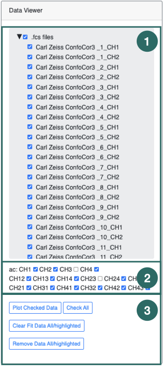
Figure 5) Data Viewer detail.
Data Viewer Window
1) The Data Viewer lists all the curves that can be plotted and fitted. The curves are grouped by input file type (e.g. .fcs files) or source (e.g. point FCS for correlated photon files). To plot a curve, tick the box next to its name and click the 'Plot Checked Data' button (3). Highlighting is different to checking: highlighting a curve selects it for processing (fitting, copying, clearing and removing), and shows it in blue on the plot, whereas checking only affects the plotting. The buttons in the title bar make the text of the list larger or smaller, widen the panel towards the plot to read long names, and minimise the panel.2) The Data filter shows or hides curves by channel, in the Data Viewer, the plot and the fitting lists, enabling them or not for plotting or fitting. 'ac' lists the autocorrelations: CH1 refers to the first channel, CH2 to the second, and so on. 'cc' lists the cross-correlations: CH12 is the cross-correlation of the first channel with the second, and CH21 the alternate cross-correlation. Only the channels present in the loaded data are listed.
3) 'Plot Checked Data' plots all the checked curves in the list (1). To check all the curves in the list, click 'Check All'; click it a second time ('Check None') to uncheck them all. 'Clear Fit Data All/highlighted' clears the fitted models and parameters of the highlighted curves, or of all curves if none are highlighted, and 'Remove Data All/highlighted' removes the highlighted curves (or all curves) from the software. Both are also available by right-clicking the list.
Tip: Certain actions are performed on highlighted data. To highlight a curve, click its name; to highlight several, use the 'shift' key for a range or the 'ctrl' (Windows) or 'command' (MacOS) key. Curves can also be highlighted by clicking them on the plot.
Tip: To select all the curves of a given type, click its group header (e.g. .fcs files).
Diffusion coefficient calculation
FoCuS-Fit-JS has a number of options for configuring the equation that is used to fit the calculated correlation function. Within FoCuS-Fit-JS, it is possible to fit an equation with either 2D or 3D diffusion equations with between one to three diffusion components. There is also the option to include, one to three triplet states in the equation also (although 'no triplet 'is the default). Triplet state equations are used to model the cases when the fluorophores under investigation have dark-states that can be induced by the imaging regime. If present it is normal to correct for triplet states in the diffusion equation, due to the impact they have on the overall correlation curve. The overall equation for analyzing the correlation function is
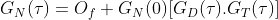
(9)where τ represents time, Of represents the offset (normally zero), GN(0) is the amplitude of the correlation function, GD is the diffusing component and GT is the optional triplet state. For 2D diffusion (e.g. in a bi-layer) G2D is used (in place of GD)
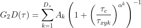
(10)and between one and three diffusing species are included using the Ds parameter. For the case Ds = 1, A1 = 1, else ∑Ds Ak = 1 and this parameter k=1 serves to establish how the amplitude is composed of the different diffusing species.
Species amplitudes. In FoCuS-Fit-JS, as in FoCuS-point, A2 is calculated from the other amplitudes so that they always sum to one: with two species A2 = 1 − A1, and with three species A2 = 1 − A1 − A3. A1 (and A3) are fitted, within their Min and Max (0 to 1 by default); A2 is shown in the parameter table as a calculated value, without Init, Vary, Min or Max. With one species A1 is always 1. When two or three species are chosen, A1 (and A3) start at 0.5 (two species) or 1/3 each (three species) with Vary ticked, and the transit times of the species start at different values (τxy1 = 0.01 ms, τxy2 = 0.1 ms, τxy3 = 1 ms) so that the fit can separate them; values that you have set yourself are kept. With three species, keep A1 + A3 ≤ 1 so that A2 is not negative.
Note that the amplitudes are fractions of the correlation amplitude, not of the number of molecules: each species contributes in proportion to its number of molecules times the square of its brightness (Ak ∝ Nk·qk2). The amplitudes equal the molecular fractions only if the species are equally bright.
Changes to earlier versions. The version of FoCuS-fit-JS used in the original publication (Nature Photonics, 2021, DOI 10.1038/s41566-021-00876-x) used a ratio instead: A1, A2 and A3 were each set in the parameter table and divided by their sum during the fit (Ak/∑A). In that implementation the amplitudes were rescaled one after another, each using the already rescaled values, so they did not sum exactly to one. The current version uses FoCuS-point's method described above instead, so fits with two or three species can differ from those made with that earlier version; single-species fits are unaffected. The default starting values for two and three species, and showing A2 as a calculated value, are also new in this version.
τxyk is the lateral diffusion rate coefficient and represents the time taken for the diffusing species to move laterally through the illumination area. α is the anomalous factor which is important for compensating for when the diffusion kinetics are non-idea. For ideal diffusion, the anomalous factor = 1.0 whereas if, for example, Continuous Wave STED depletion is used this factor can drop towards 0.0 unless time-gating is employed. A similar factor is not included for the z-dimension at this time as anomalous diffusion from conventional STED illumination is only potent in the z-axis. For studying cases of 3D diffusion, FoCuS-Fit-JS has two different equations at its disposal:
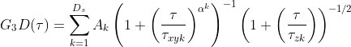
(1A)and
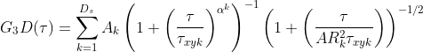
(1B)τzk is the transit time in the axial dimension of each species. The reason you might use the second G3D equation is that in ideal cases τz is related to τxy through some constant factor (AR) and so it is desirable to just find AR rather than trying to learn τz that is dependent on τ. The anomalous factor is not applied to the calculation of τz as often the dominant dimension of diffusion is in the lateral dimension and so the contribution of the anomalous factor in the axial-dimension is considered to be trivial. Finally, FoCuS-Fit-JS offers two triplet equations [3],
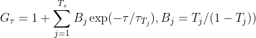
(2A)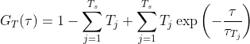
(2B)The other fit parameters are: the offset Of ('offset'); the amplitude GN(0) ('GN0'), from which the number of molecules in the focus, N (FCS) = 1/GN(0), and the counts per molecule (cpm, kHz), the count rate divided by N, are calculated; the lateral and axial transit times τxy and τz ('txy', 'tz', in ms), the aspect ratio AR and the anomalous factor α ('alpha') of each species; and the triplet amplitude B (Equation 2A) or fraction T (Equation 2B) and triplet time τT ('tauT', in ms) of each triplet state.
The fitting itself in FoCuS-Fit-JS is performed using a Levenberg-Marquardt algorithm implemented in Javascript (https://github.com/mljs/levenberg-marquardt). In addition to the parameters derived directly from fitting the diffusion equations mentioned above there are also some other parameters which are indirectly calculated by which are equally useful. With the above models it is possible to calculate the diffusion coefficient with knowledge of the detection beam radius and the measured transit time using: Dk=ωxy2/4.τxyk, where Dk is the diffusion coefficient (μm2.s-1) of species k, ωxy is the lateral beam radius (μm) and τxyk is in seconds (the fitted transit times are in ms, so divide them by 1000 first). The lateral beam radius can be calculated from the beam FWHM with: ωxy= FWHM/√(2.ln(2)). Furthermore, the diffusion coefficient can also be calculated from the axial transit time measurement with Dk=ωz2/4.τzk where ωz=FWHMz/√(2.ln(2)) and FWHMz is the FWHM in the axial direction.
To assist in the calculation and interpretation of cross-correlation data FoCuS-Fit-JS also offers coincidence analysis through:
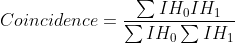
(3), where IH0 and IH1 are intensity histograms calculated from the first and second raw input intensity data in a given spatial location. This equation is a form of brightness analysis that correlates the coincidence of brightness within the acquired channels.
Amplitude ratio measurements can be used to assess the relative abundance of species in an experiment:
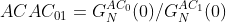
(4a) and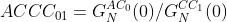
(4b)where ACA01 is the amplitude ratio of the first channel with respect to the second and GNAC0(0) is the amplitude measurement from the first autocorrelation channel and GNAC1(0) is the same measurement from the second channel. ACCC01 is similar but represents the amplitude ratio of the first channel to the amplitude calculated from cross-correlation function amplitude GNCC01(0).
[1] Waithe D., Clausen P. M., Sezgin E. Eggeling C., 2016. FoCuS-point: software for STED fluorescence correlation and time-gated single photon counting
[2] Waithe D., Schneider F., Chojnacki J., Clausen M.P. , Dilip Shrestha 2, Bernardino de la Serna, J., Eggeling C., 2018. Optimized processing and analysis of conventional confocal microscopy generated scanning FCS data.
[3] Haustein, E. and Schwille, P., 2004. Fluorescence correlation spectroscopy: an introduction to its concepts and applications. Biophysics Textbook Online.
[4] Wahl M., Gregor I., Patting M., Enderlein J., 2003. Fast calculation of fluorescence correlation data with asynchronous time-correlated single-photon counting. Optics Express 11, 3583-3591.